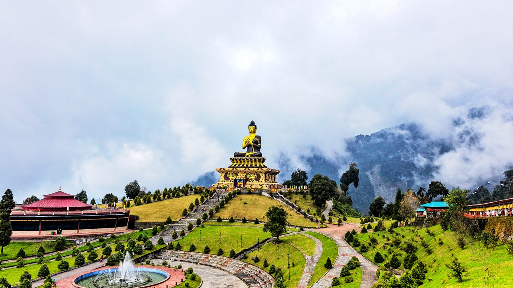

West Bengal
"The Cultural Capital of India"
Quick Facts
Popular Tourist Attractions
Victoria Memorial
A magnificent marble structure and museum in Kolkata.
Sundarbans
World's largest mangrove forest, home to the Royal Bengal Tiger.

Darjeeling
Famous for tea gardens, Himalayan railway, and scenic beauty.
Nature & Wildlife
From the majestic Royal Bengal Tigers in the Sundarbans to lush tea gardens and Himalayan foothills, West Bengal has rich biodiversity and landscapes.
Famous Personalities
- Rabindranath Tagore: Nobel laureate poet and writer.
- Swami Vivekananda: Spiritual leader and philosopher.
- Satyajit Ray: Legendary filmmaker and writer.
Local Handicrafts
Terracotta art, Baluchari sarees, Shantiniketan leather goods, and jute products are famous around the world.
Climate
West Bengal has a tropical climate — hot and humid summers, heavy monsoons, and cool winters in northern hill regions.
Culture & Festivals
Festivals
Durga Puja, Poila Boishakh, and Saraswati Puja are widely celebrated with grandeur.
Dance & Music
Baul music, Rabindra Sangeet, and classical dance forms enrich the state’s heritage.

Food
Rosogolla, macher jhol, shorshe ilish, and sandesh are popular delicacies.
Attire
Men wear dhoti-kurta, women wear traditional red-bordered sarees.
Did You Know? Kolkata was the capital of British India before Delhi and is known as the "City of Joy".
Note: Information may be subject to updates. Kindly notify us of any discrepancies.